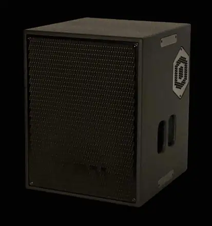
S1D
Kolumna point source, 3,5-drożna
Uniwersalna kolumna na statyw - od klubu po plener. Wysoka skuteczność i niskie zniekształcenia w kompaktowej obudowie.
- Dyspersja 90x60, 120x40 lub 60x40 st.
- Waga 32 kg
Fińskie systemy, w których kierunkowość zapewnia sama konstrukcja kolumny, a nie korekcja w procesorze. Wybrane modele pokażemy i damy posłuchać na żywo.
Aura Audio założyło pod koniec lat 90. dwóch fińskich inżynierów dźwięku. Ich zasada jest prosta: większość problemów akustycznych trzeba rozwiązać na etapie projektu kolumny, a nie naprawiać później w DSP.
Opatentowany układ głośników, który daje kontrolę nad kierunkowością w całym paśmie. Dźwięk idzie do publiczności, mniej trafia na scenę i w ściany.
Szeroka, równa dyspersja i brak słyszalnego filtrowania grzebieniowego - także w małych głośnikach instalacyjnych.
Zestawy grają liniowo bez ciężkiej korekcji. Gotowe presety są dla wzmacniaczy Aura Audio, a dla wybranych modeli także dla Powersoft serii T i X.
To nie jest pełny katalog. To produkty, które najczęściej polecamy - z tym, co realnie dają na scenie, w studiu i w lokalu. Część z nich mamy w ciągłym użyciu, więc można ich posłuchać.
Dla firm nagłośnieniowych i organizatorów: zestawy, które grają do publiczności, a nie na scenę i mikrofony.

Kolumna point source, 3,5-drożna
Uniwersalna kolumna na statyw - od klubu po plener. Wysoka skuteczność i niskie zniekształcenia w kompaktowej obudowie.
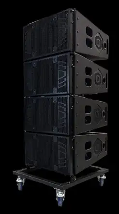
Moduł systemu liniowego, symetryczny, 3,5-drożny
Gdy publiczności jest więcej: układ liniowy z tą samą kontrolą kierunkowości co S1D.
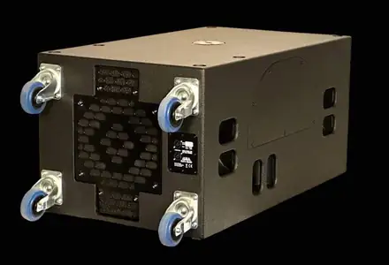
Subbas zespolony 18 + 12 cali
Charakter kardioidalny bez dodatkowego procesora: bas idzie na widownię, a scena zostaje czystsza.
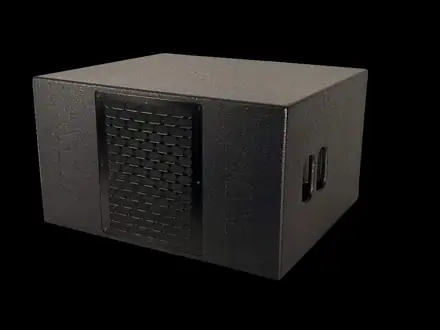
Subbasy hybrydowe: tuba + band-pass
Zwarty, precyzyjny dół z wydajnością głośnika o rozmiar większego. Potrzeba potężnego basu na małej powierzchni? XQ48.
Koaksjalne monitory podłogowe, które można też założyć na statyw. Muzyk słyszy siebie wyraźnie, z zapasem przed sprzężeniem.
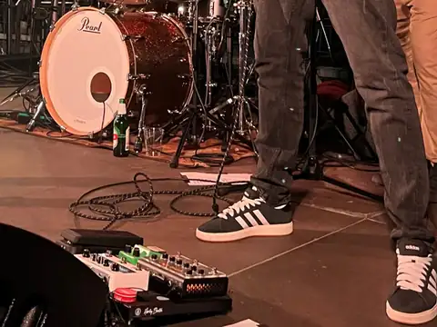
Kompaktowy monitor koaksjalny
Ultralekki dzięki sklejce wzmocnionej włóknem szklanym. Preset dla Powersoft T i X sprawdzony na wielu mikrofonach.
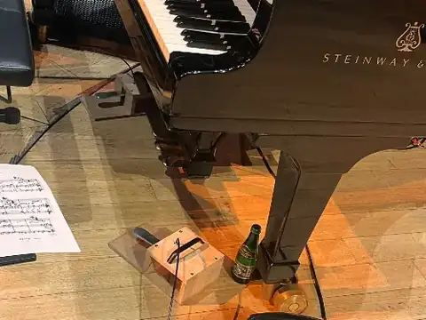
Niskoprofilowe monitory koaksjalne
Dwukrotnie większa moc niż C10 - na większe sceny, gdzie potrzeba więcej głośności na scenie.
Pasywne monitory bez kopułki wysokotonowej. Słychać nagranie, a nie głośnik - także przy cichym odsłuchu.
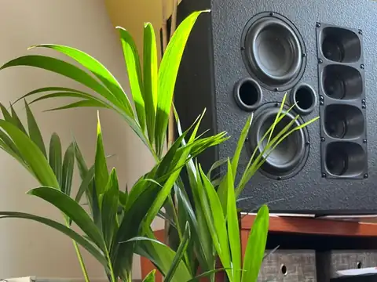
Duży, analogowy, pasywny monitor studyjny
Naturalne brzmienie bez koloryzacji, świetnie oddana przestrzeń i kontrolowany bas. Niedostatki nagrania słychać od razu.
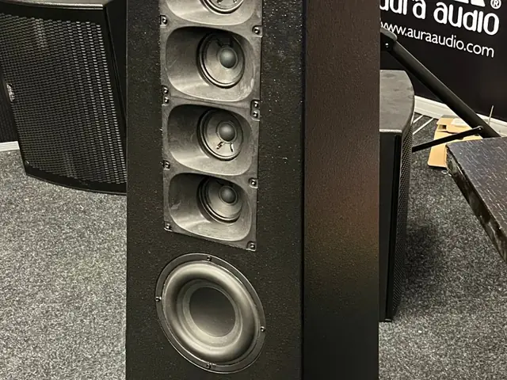
Wolnostojąca wersja F2
Brzmienie z reżyserki przeniesione do salonu. Kolumny stoją na podłodze, a słucha się z kanapy.

Satelita i subwoofer studyjny
F1 jako satelita w systemie 2.1 albo w surround 5.1 i Dolby Atmos. Fsub rozszerza pasmo do 22 Hz.
Głośniki instalacyjne, które dobrze wyglądają, grają czysto i nie wymagają drogiej elektroniki.
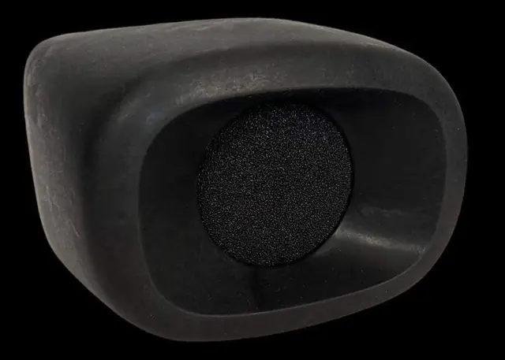
Projekt fińskiego designera Stefana Lindforsa
Lekka obudowa z kompozytu bez własnych rezonansów i opatentowany falowód: szeroka dyspersja z 3-calowego głośnika.
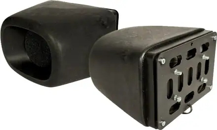
i3 z membraną bierną
Pasmo od 65 Hz, więc muzyka w tle w restauracji zagra bez subwoofera, nawet z tanim wzmacniaczem naściennym. Cały system wychodzi taniej.
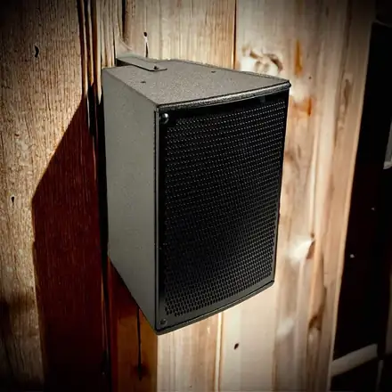
Klasyczne zestawy dwudrożne
Wysoki podział pasma, ok. 3 kHz: głośnik wysokotonowy nie gra tam, gdzie brzmiałby nieprzyjemnie dla ucha.
Od dużych końcówek z DSP do systemów koncertowych po kompaktowe 1U do studia i instalacji.
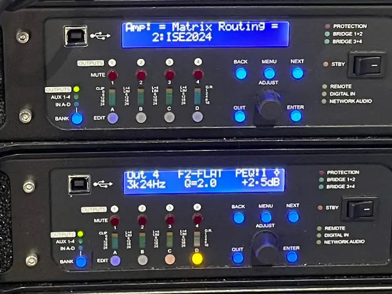
Platforma MC2/XTA z 8-kanałowym DSP
Presety dla całej gamy Aura Audio, różne sposoby sterowania i opcjonalne karty Dante.
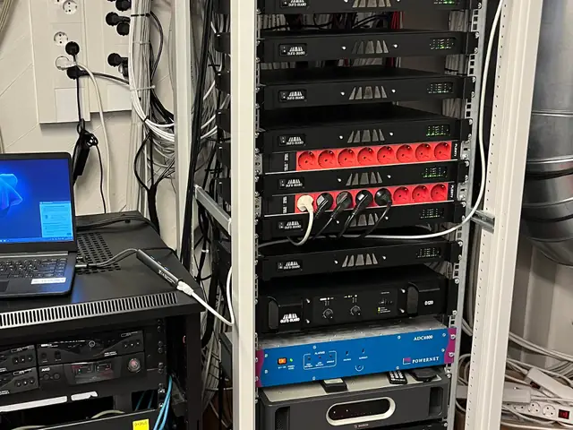
Kompaktowe 1U na modułach Hypex
Transparentne brzmieniowo, z bardzo niskimi szumami własnymi. Zalecane między innymi do monitorów F2.
Pełna oferta z parametrami technicznymi jest na stronie producenta: auraaudio.fi. Pytania o ceny i dostępność - najlepiej telefonicznie lub przez formularz poniżej.
Zdjęcia z wydarzeń, na których grały systemy Aura Audio z naszego magazynu.
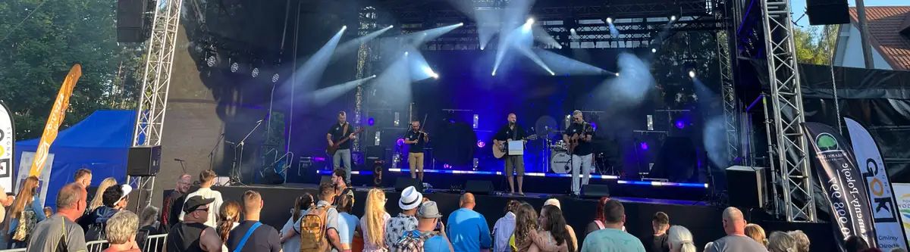
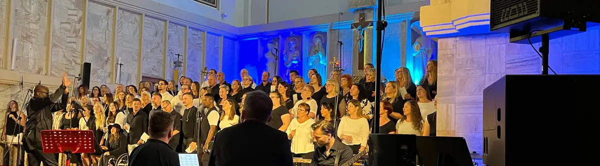
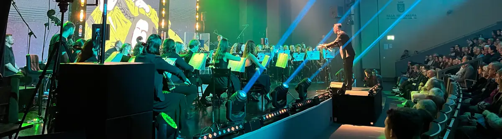
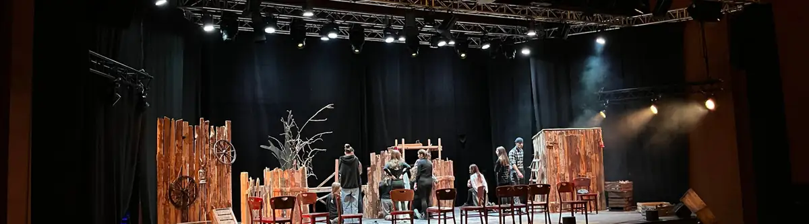
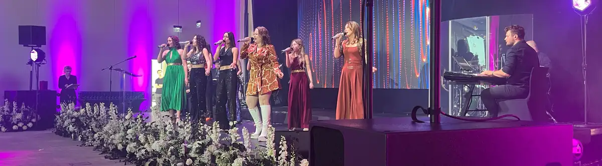
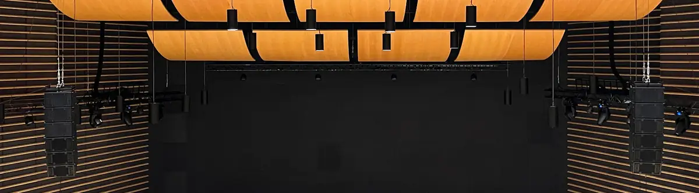
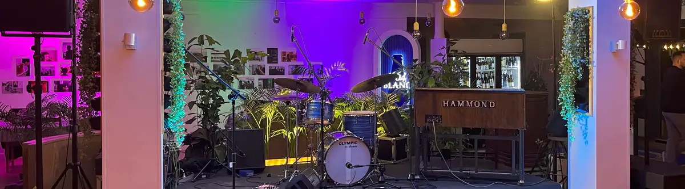
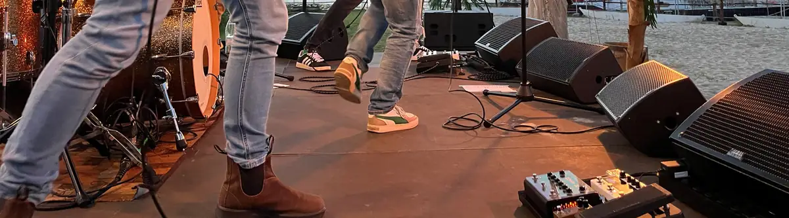
"Wdzydze dały radę!"
Krzysztof Wałecki o S1D + S18F, wpis na Facebooku
Koncert Agnieszki Chylińskiej w Kolbudach
S2, S18C i A28C w akcji, rolka na Instagramie
Pasywne "kardioidy" rodem z Finlandii
Artykuł o Aura Audio na infosound.pl i rozmowa w realizator.pl
Prezentacje, opinie realizatorów i nagrania z wydarzeń. Odtwarzacz ładuje się dopiero po kliknięciu, więc strona pozostaje szybka.
Napisz, gdzie ma grać nagłośnienie i ile osób ma słuchać. Doradzimy, co wybrać, i zorganizujemy prezentację.